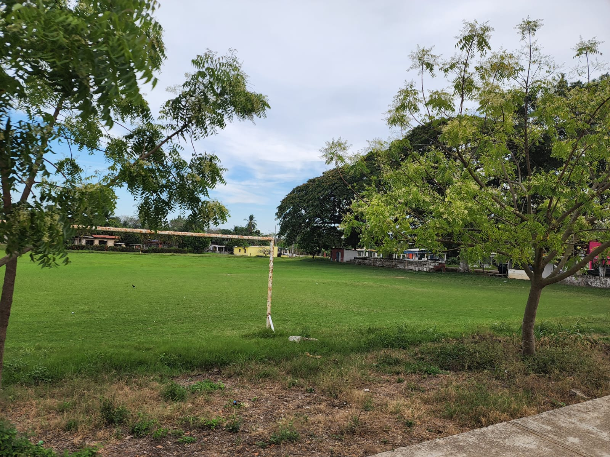
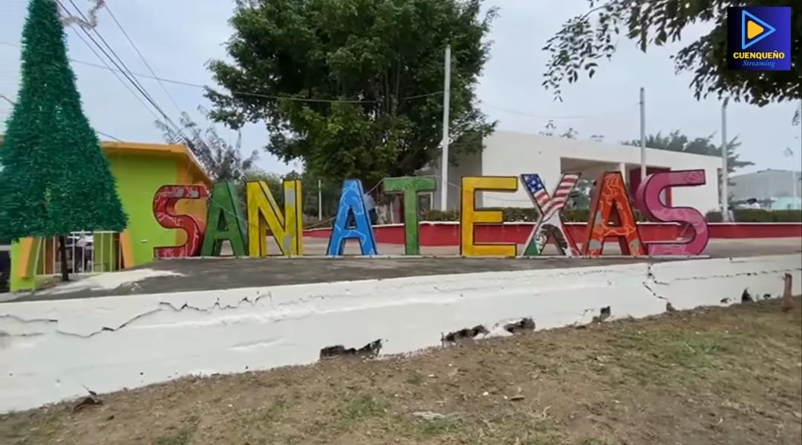

Algo que los caracteriza es la unión entre las personas, ya que la mayoría se conoce y siempre tratan de ayudarse. También son gente trabajadora, sencilla y amable con quienes los visitan. Ahi la vida es más tranquila y se disfruta más el tiempo con la familia.
Una de las principales tradiciones es la fiesta de San Antonio de Padua, que se celebra el 13 de junio. En esos días hay cabalgatas, carreras, bailes y una feria que dura varios días. También celebran el Día de Muertos, el Día de las Madres y la Navidad, donde hacen convivios en el parque y pasan momentos muy bonitos todos juntos.
El campo deportivo es un espacio fundamental dentro de la comunidad, ya que permite la práctica de deportes como el fútbol y otras actividades recreativas. En este lugar, los jóvenes desarrollan habilidades físicas, fomentan el trabajo en equipo y fortalecen la convivencia social.

El parque es un sitio de reunión para las familias, donde las personas pueden descansar, convivir y participar en eventos culturales y sociales. Es un lugar importante para la integración de la comunidad y el fortalecimiento de las relaciones entre los habitantes.

En general, es un pueblo pequeño pero muy bonito, donde lo más importante es la gente y sus tradiciones. Es un lugar sencillo, pero lleno de cultura y costumbres que lo hacen especial para quienes viven ahí y para quienes lo visitan.
CELEBRACIONES RELIGIOSAS:
La iglesia de San Antonio en Texas, Veracruz, es uno de los lugares más importantes y representativos de la comunidad, ya que no solo es un espacio religioso, sino también un punto de encuentro donde se fortalecen las tradiciones, la fe y la unión entre las personas. A lo largo de los años, esta iglesia ha sido testigo de celebraciones, fiestas patronales y momentos importantes en la vida de los habitantes.
Muchas familias del lugar participan activamente en las actividades religiosas, especialmente durante las festividades en honor a San Antonio, donde se realizan misas, procesiones, eventos culturales y convivencias. Estas celebraciones atraen tanto a personas de la comunidad como a visitantes de otros lugares, quienes llegan para formar parte de las tradiciones y disfrutar del ambiente lleno de alegría y devoción.
Fuentes consultadas:
Google:San Antonio Texas (Veracruz) - Wikipedia, la enciclopedia libre, IA chatgpt
Volver al inicio